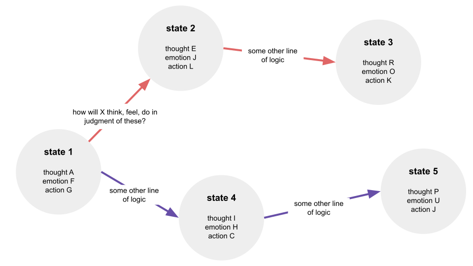

the audience, emotional boundaries, and the posible trajectories of the past.
does the self exist if it is not observed? i've written some thoughts about why i don't think it can and i'm discovering tangible experiences that now lead me to believe that it can.
i find myself often automatically considering how someone will judge my thoughts, emotions and actions. "how will the audience react?". i react to this with a new set of thoughts, emotions and reactions, usually negative and always stimulating:

yesterday i caught myself en route to state 2 from state 1 and i paused, returned back to state 1, and instead traveled toward state 4. not only did i feel relief, i ended up in a state 5 that i probably wouldn't have been able to even imagine from state 2.
given that the consideration of an audience is almost a reflex for me, i have to question how many sequences of thought in my past were truly focused on the content of my thoughts, emotions and actions. the stories that i tell myself about myself. how much of the audience is telling that story? perhaps this experience set a new emotional boundary (gaining separation from what i perceive others' judgment to be about my thoughts, emotions and actions) that i can explore. it defined a sandbox of sorts where i can see what i really think, feel and do, even with consideration of others' judgment, but eventually returning to some other core logic that the original thought, emotion or action was leading me to.